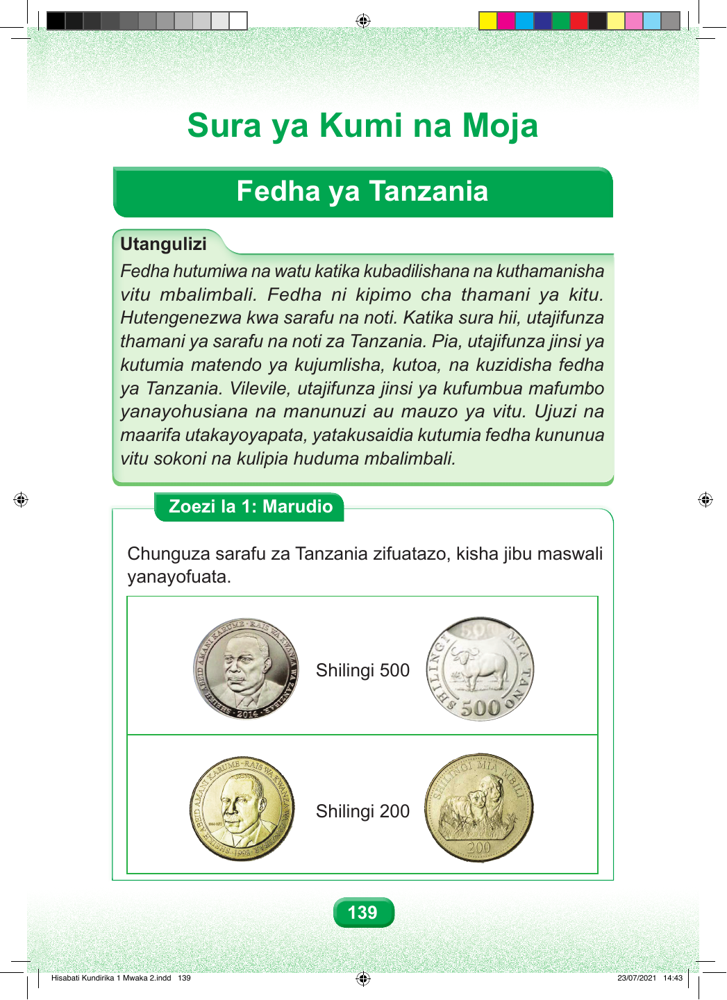

Sura ya Kumi na Moja Fedha ya Tanzania Utangulizi Fedha hutumiwa na watu katika kubadilishana na kuthamanisha vitu mbalimbali. Fedha ni kipimo cha thamani ya kitu. Hutengenezwa kwa sarafu na noti. Katika sura hii, utajifunza thamani ya sarafu na noti za Tanzania. Pia, utajifunza jinsi ya kutumia matendo ya kujumlisha, kutoa, na kuzidisha fedha ya Tanzania. Vilevile, utajifunza jinsi ya kufumbua mafumbo yanayohusiana na manunuzi au mauzo ya vitu. Ujuzi na maarifa utakayoyapata, yatakusaidia kutumia fedha kununua vitu sokoni na kulipia huduma mbalimbali. Zoezi la 1: Marudio Chunguza sarafu za Tanzania zifuatazo, kisha jibu maswali yanayofuata. Shilingi 500 Shilingi 200 139 Hisabati Kundirika 1 Mwaka 2.indd 139 23/07/2021 14:43